Sciences Po, avril 2025
Maya et Stanislaw ont suivi une journée complète au Village Reille, notre base pendant quatre ans, avec Pattie Boyz en cuisine.
Réalisation : Maya et Stanislaw

Collectivités, entreprises, fondations, commerçants du quartier. Chacun apporte ce qu’il peut, et tout finit sur le terrain.
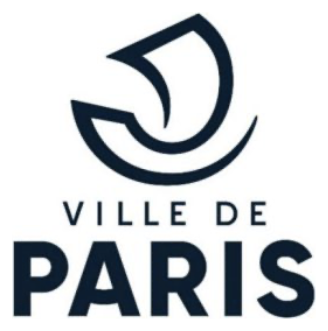

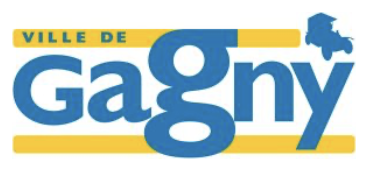

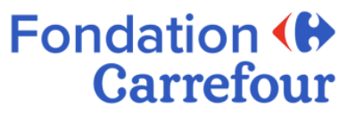
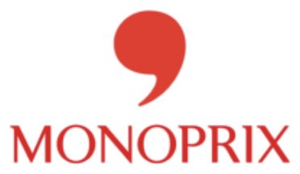
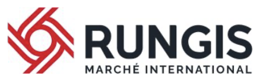
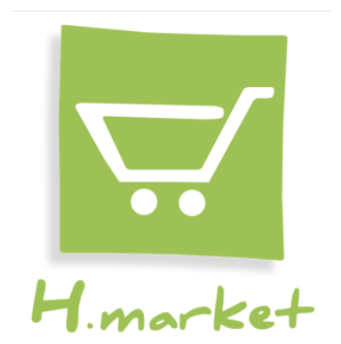
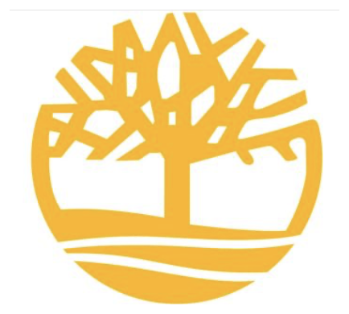
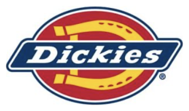
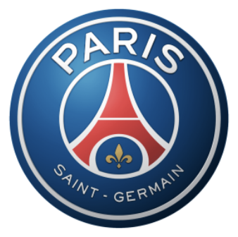
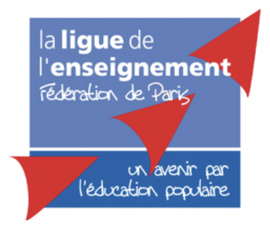
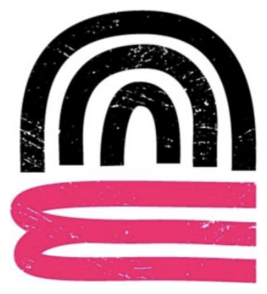
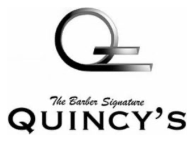
Vos produits invendus deviennent des repas chauds le samedi, et des colis pour les familles et les étudiants.
Un soutien financier ou en nature. 60 % de réduction d’impôt pour l’entreprise.
Vos salariés en cuisine ou en maraude, le temps d’une journée solidaire.
Une collection, un événement, une collecte. Comme avec Shinzo Paris et Timberland.
Maya et Stanislaw ont suivi une journée complète au Village Reille, notre base pendant quatre ans, avec Pattie Boyz en cuisine.
Réalisation : Maya et Stanislaw
« Les 40 qui (re)créent du lien. »Laurent François, président, lauréat 2026 de l’Institut Choiseul et La Poste. Association distinguée par la Mairie du 14e. Lire l’article Choiseul